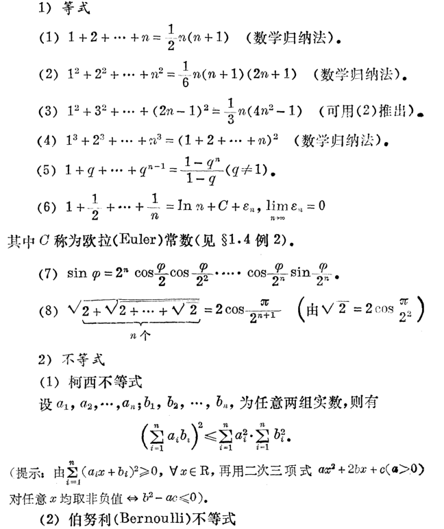
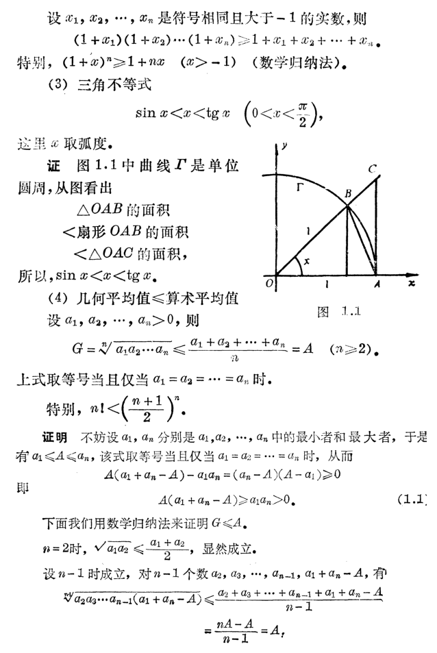
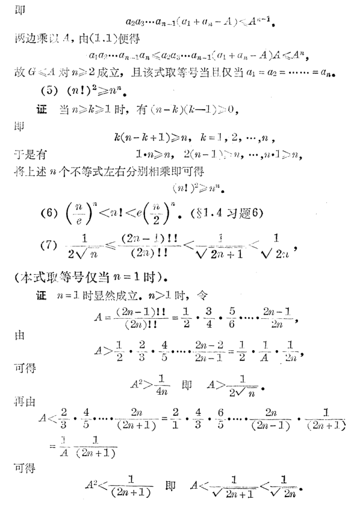
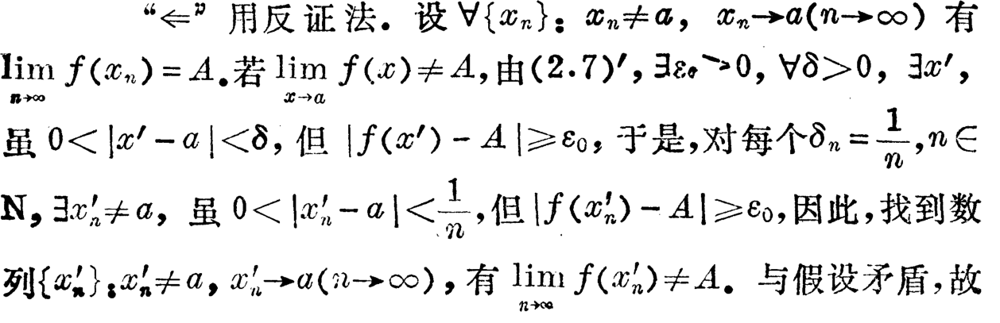
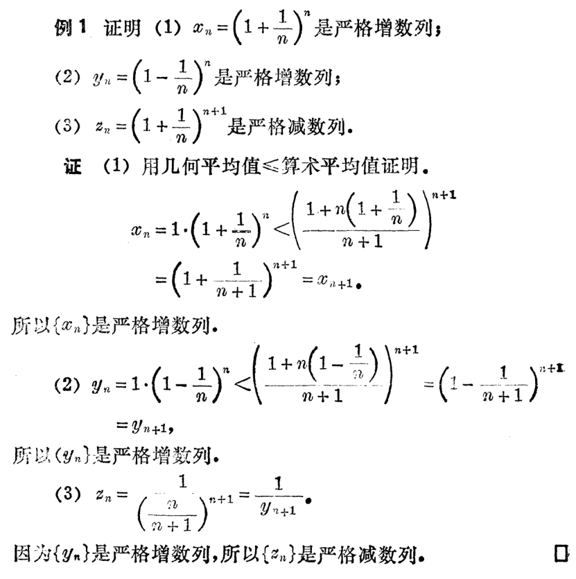
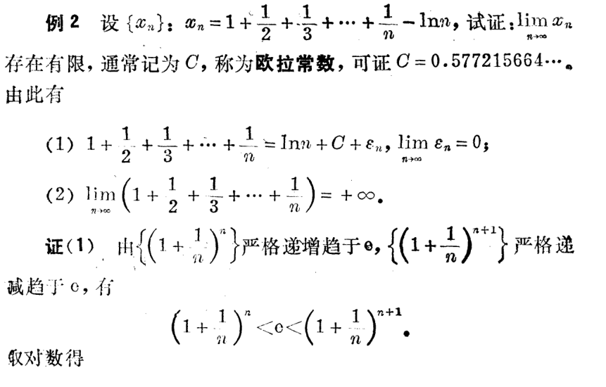
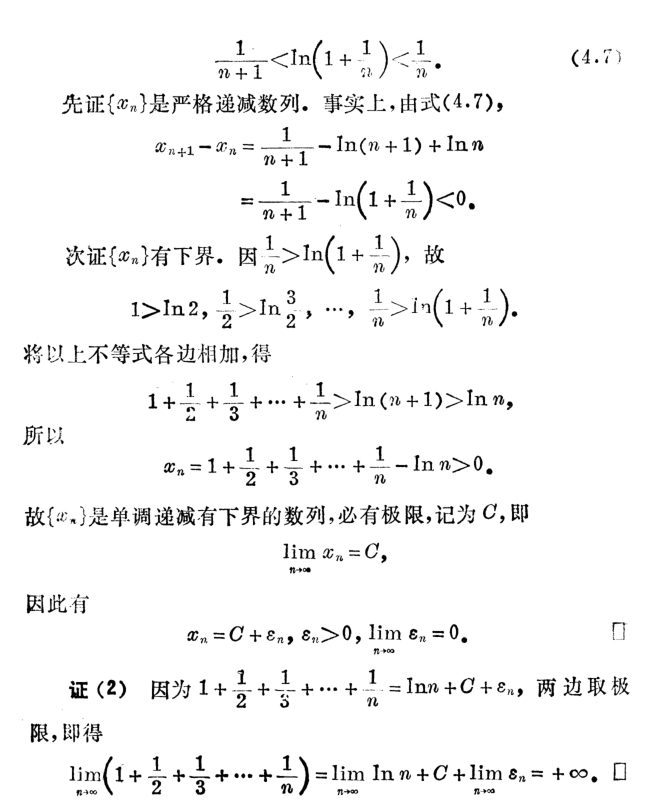
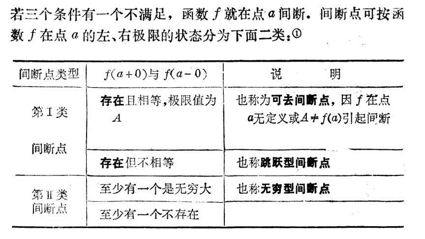

微积分（一）总结 PART I
本文简要梳理了微积分（一）的一些内容, 并记录一些套路.
分析基础
界, 确界
(上, 下)界, 有界.
确界: 若 \(\alpha\) 是 \(A\) 的上确界(即 \(\alpha = \sup A\)), 那么:
一方面, \(\alpha\) 是上界, 即 \(\forall x\in A, x \le \alpha\).
另一方面, \(\forall \varepsilon>0, \exists x_0\in A\) 使得 \(\alpha-\varepsilon<x_0\). (不可再小)
证明与上下确界有关的不等式需要根据定义, 如证明 \(\sup_{x\in X, y\in Y}\{x+y\}=\sup_{x\in X}\{x\}+\sup_{y\in Y}\{y\}\)
几大互相等价的定理
1. 实数的连续性原理
若 \(A, B\) 为非空实数集, 且 \(\forall x\in A, \forall y\in B, x<y\), 则 \(\exists c\in \mathbb R\) 使得 \(\forall x\in A, \forall y\in B, x\le c\le y\).
2. 确界存在定理
若 \(A\) 非空有上(下)界, 则 \(A\) 必有上(下)确界.
3. 单调有界定理
若 \(\{a_n\}\) 单调递增/减且有上/下界, 则 \(\{a_n\}\) 收敛(为 \(\sup a_n\) / \(\inf a_n\))
4. 闭区间套定理
若 \(\{[a_n, b_n]\}\) 是一列闭区间, 且满足 \([a_1, b_1]\supset [a_2, b_2]\supset\cdots \supset [a_n, b_n]\supset \cdots\), 及 \(\lim\limits_{n\to \infty}(b_n-a_n)=0\). 则存在唯一 \(c\in [a_n, b_n]\), 使得 \(\lim_{n\to \infty}a_n=\lim_{n\to\infty}b_n=c\).
5. 收敛子列定理
有限数列必存在收敛子列(但是收敛的值不唯一)
6. 柯西收敛准则
\(\{a_n\}\) 收敛等价于 \(\forall \varepsilon > 0, \exists N > 0, \forall m, n>N, |a_m-a_n|<\varepsilon\).
7. 有限覆盖定理
闭区间的一个覆盖必存在有限子覆盖.
常用的等式、不等式
展开



这些不等式在后面都用得着.
极限定义
数列极限: \(\{a_n\}\) 为一数列, 若 \(\forall \varepsilon > 0, \exists N>0, \forall n>N, |a_n-A|<\varepsilon\), 则 \(\lim\limits_{n\to \infty}a_n=A\).
函数定义1: \(f(x)\) 在 \(U(x_0)\) 有定义, 若 \(\forall \varepsilon > 0, \exists \delta>0, \forall x\in U^o(x_0, \delta), |f(x)-A|<\varepsilon\), 则 \(\lim\limits_{x\to x_0}=A\).
函数定义2: \(f(x)\) 在 \([H, +\infty)\) 有定义, 若 \(\forall \varepsilon > 0, \exists H > 0, \forall x > H, |f(x)-A|<\varepsilon\), 则 \(\lim\limits_{x\to x_0}=A\).
上面三个定义, 如果要写成 \(\lim f=+\infty\) 或 \(\lim f=-\infty\) 的形式, 则要把 \(\varepsilon\) 的限制改为上/下界限制(即任意一个上/下界, \(f\) 均可超出); 如果 \(\lim f=\infty\) 则把 \(f\) 套上个绝对值,转化为上界. (换句话说, \(\lim f=\infty\) 等价于 \(\lim |f|=+\infty\))
一些找 \(N,\delta\) 的方法.
直接法, 如 \(1/n, q^n, \sqrt[n]a\).
二项式定理法, 如 \(\sqrt[n]n, \frac{poly(n)}{a^n}\).
放缩法. 如 \(\sin x < x(x > 0)\)
有理化.
善用取整符, 善用限制范围(特别是函数的极限)的方法.
单侧极限: 极限存在等价于左右极限存在且相等.
极限的性质
数列有限项不影响敛散性.
极限存在则唯一.
收敛数列有界, 收敛函数局部有界.
极限的保序性: 若 \(a_n\to A, b_n\to B\), 且 \(a_n\ge b_n\), 则 \(A\ge B\).
极限的四则运算(注意: 需保证得到的两部分极限均存在!)
极限的复合运算: 若 \(\lim\limits_{x\to x_0}\varphi(x)=b, \lim\limits_{t\to b}g(t)=A\), 且在 \(U^o(x_0)\) 内 \(\varphi(x)\ne b\), 则 \(\lim\limits_{x\to x_0}g(\varphi(x))=A\).
海涅定理: \(\lim\limits_{x\to x_0}=A\) 等价于 \(\forall\{x_n\}, x_n\to x_0, x_n\ne x_0\) 都有 \(\lim\limits_{n\to \infty}f(x_n)=A\).
常常用它的逆否证明一个函数没有极限
海涅定理的证明(右到左)

- 夹逼定理: 存在 \(U^o(x_0, \delta)\), \(f(x)\le g(x)\le h(x)\) 且 \(x\to x_0\) 时 \(f(x)\to A, h(x)\to A\), 则 \(g(x)\to A\).
两个重要极限
\(\lim\limits_{x\to 0}\dfrac{\sin x}{x}=1\), 使用不等式 \(\sin x < x < \tan x\) 夹逼证得.
\(\lim\limits_{x\to +\infty}(1+\dfrac{1}{x})^x=e\), 使用 \((1+\dfrac{1}{n})^n\) 递增证得数列极限, 再与 \((1+\dfrac{1}{n})^{n+1}\) 夹逼证得函数极限.
数列单调的证明

这里还有另一种证明:
\[ \begin{aligned} a_n&=(1+\dfrac{1}{n})^n \\ &=1+C_n^1\dfrac{1}{n}+C_n^2\dfrac{1}{n^2}+\cdots+C_n^k\dfrac{1}{n^k}+\cdots+C_n^n\dfrac{1}{n^n} \\ &=1+1+\cdots+\dfrac{n(n-1)\cdots(n-k+1)}{k!n^k}+\cdots+C_n^n\dfrac{1}{n^n} \\ &=1+1+\cdots+\dfrac{1\cdot(1-\frac{1}{n})\cdots(1-\frac{k-1}{n})}{k!}+\cdots+C_n^n\dfrac{1}{n^n} \end{aligned} \]
则
\[ a_{n+1}=1+1+\cdots+\dfrac{1\cdot(1-\frac{1}{n+1})\cdots(1-\frac{k-1}{n+1})}{k!}+\cdots+C_{n+1}^{n+1}\dfrac{1}{(n+1)^{n+1}} \]
我们发现 \(a_{n+1}\) 项数多, 且每项都大, 故 \(a_{n+1}>a_n\).
又
\[ \begin{aligned} a_n&<1+1+\cdots+\dfrac{1}{k!}+\cdots+\dfrac{1}{n!} \\ &=\sum_{i=1}^n\dfrac{1}{i!} \\ &<1+\sum_{i=1}^n\dfrac{1}{2^{i-1}} \\ &=3-\dfrac{1}{2^{n-1}} \end{aligned} \]
故单调有界.
推论: 调和级数的估计


连续性
定义(函数在某点连续): 若 \(\lim\limits_{x\to x_0}f(x)=f(x_0)\) 则 \(f(x)\) 在 \(x_0\) 连续.
条件: \(f(x)\) 在 \(U(x_0)\) 有定义, 在 \(x\to x_0\) 有极限, 极限值等于函数值.
或者使用增量: \(\lim\limits_{\Delta x\to 0}(f(x_0+\Delta x)-f(x_0))=0\).
同时, 有相应的 \(\varepsilon-\delta\) 语言, 海涅定理等.
若不满足, 则称为不连续; 若在 \(x_0\) 处不连续, 但左极限、右极限中至少有一个存在, 那我们可以说它间断, \(x_0\) 即为间断点.
间断点的分类

连续等价于左连续且右连续.
初等函数在其定义域中都是连续的.
连续的性质
局部有界性
局部保号性
四则运算与复合连续
严格单调的函数有反函数, 严格单调的连续函数反函数连续.
闭区间连续函数满足有界性定理, 最值定理, 零点定理, 介值定理, 康托尔定理.
一致连续
定义: \(f(x)\) 在 \(I\) 上有定义, 若 \(\forall \varepsilon \exists \delta > 0, \forall x_1, x_2\in I, |x_1-x_2|<\delta\), 有 \(|f(x_1)-f(x_2)|<\varepsilon\), 则称 \(f(x)\) 在 \(I\) 上一致连续.
康托尔定理: 闭区间上的连续函数一致连续.
无穷小
无穷小: 以 \(0\) 为极限的变量.
无穷大: 分为三种, \(+\infty\), \(-\infty\), 两者统称为 \(\infty\).
无穷小的性质
有界性.(数列整体有界, 函数局部有界)
无穷小的线性组合是无穷小.
无穷小乘有界函数是无穷小.
无穷小的乘积是无穷小.
无穷小的倒数是无穷大.
无穷小的比较
根据 \(\lim\limits_{x\to x_0}\dfrac{\alpha(x)}{\beta(x)}\) 的值, 把无穷小直接的关系分为高阶、低阶、等阶, 若值为 \(1\), 称为等价. \(x(x\to 0)\) 称为基准无穷小, 等阶于 \(x^s(x\to 0)\) 的称为 \(s\) 阶无穷小. 等价无穷小可替换.
常见的等价无穷小替换:
\(\sin x\sim \tan x \sim \ln(1+x)\sim e^x-1 \sim \arcsin x\sim \arctan x \sim x\).
\(1-\cos x \sim \dfrac{1}{2}x^2\).
\((1+x)^k-1\sim kx\).